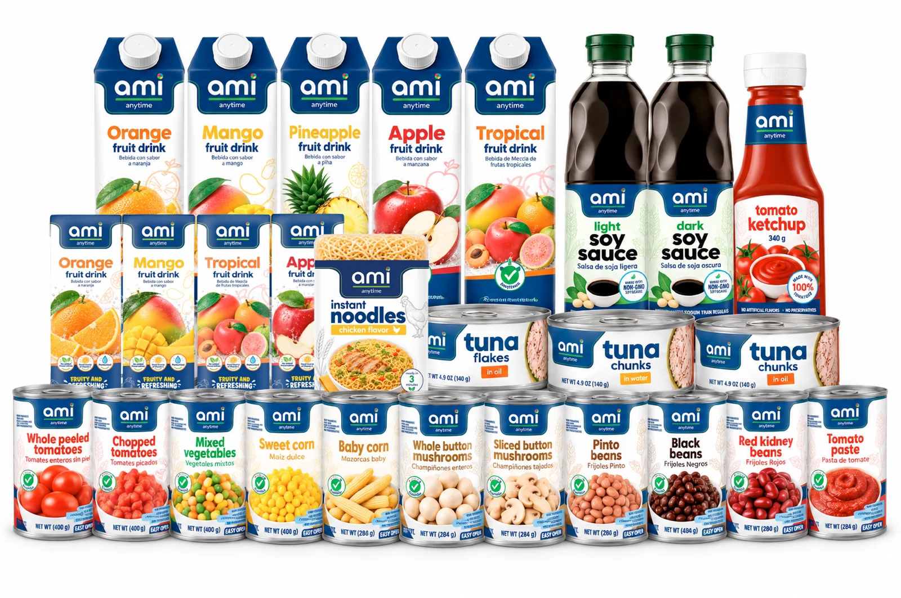

Everyday essentialsEveryday food,
ready for real meals.
From tomatoes and beans to tuna, corn, noodles and fruit drinks, ami brings familiar essentials together under one clear brand.
The ami launch rangeami anytime

Easy to recognize
Organized by aisle
English and Spanish
Find your next staple
What are you looking for?
Everyday essentialsStart with the essentials
Explore the launch range by category, pack size and flavor.
See the launch range Launch rangeMade for the pantry
A focused range of familiar foods for meals, lunches and everyday moments.
TomatoWhole Peeled Tomatoes400 g
BeansPinto Beans400 g
Products of the seaTuna Flakes in Oil140 g
Vegetables & cornSweet Corn340 g
PantryLight Soy Sauce500 ml
PantryInstant Noodles, Chicken85 g
ami anytimeOne band. Easy to recognize.
The navy ami band keeps the family together. Category colors make products easier to spot and organize across the aisle.
TomatoBeansVegetables & cornProducts of the sea
 Built around real meals and everyday moments.
Built around real meals and everyday moments. Familiar staples, one clear family.
Familiar staples, one clear family.Cook with amiTurn pantry staples into dinner
Simple recipes with ami products and ingredients you probably already have.
Explore recipes For retailersBring ami to your market
Explore the retail program and talk with American Foods International.
For retailers